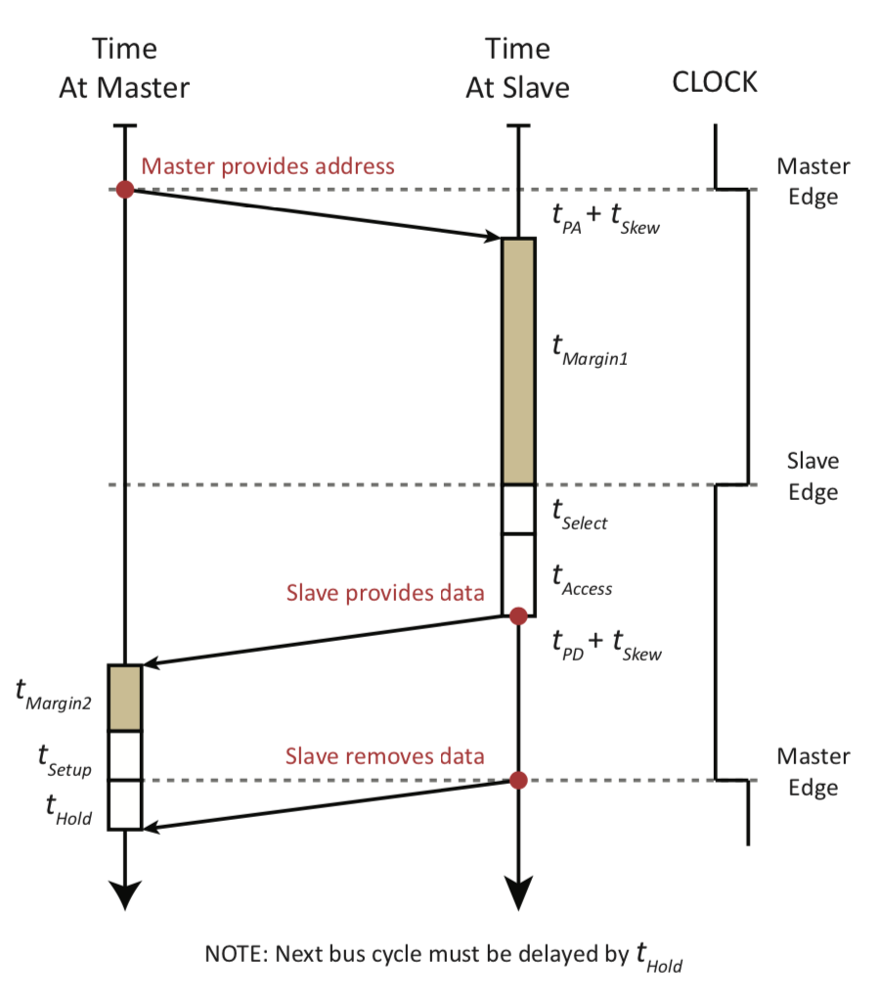
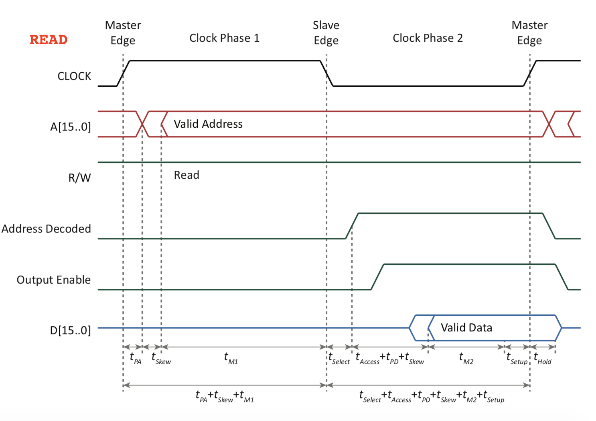
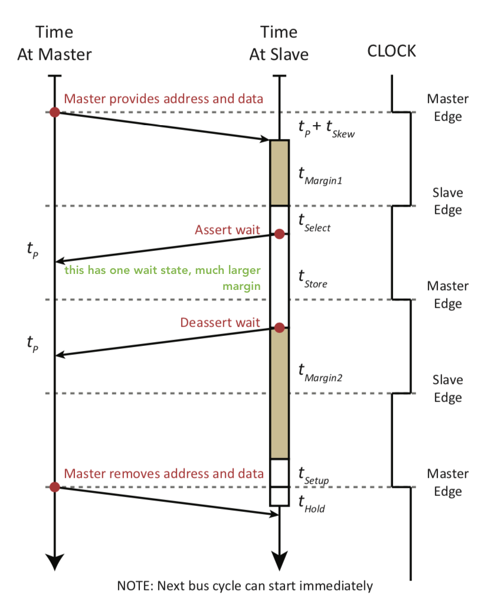

control: synchronization (time) and direction (There may be other issues to control)
Arbitration (select master)
Other signals (interrupt)
Special Topics
Timing of sets of signals (propagation delay, skew time, address decoding time)
Transmission line effects (later in the course)
Q What makes a wire part of a bus? Q Where are buses found in digital systems?
Data Transfer Synchronization Techniques
Synchronous Data Transfer: The transfer of data between communicating entities with a common view of time. In this case there is a global clock and data is transferred at a specific point in the clock period. Also all transfers are of fixed duration (one clock period. There is no feedback from the consumer to the producer of the data to alter the rate of transfer or to alter the duration that the data is valid.
we assume that the entire transfer takes place in one cycle - everything takes place on clock edges
can only be fixed for the worst case i.e. can’t adapt
Asynchronous Data Transfer: The transfer of data between communicating entities with different views of time. In this case there is no global clock, and there is a mechanism to permit variable transfer times. This mechanism may be either fully or partially interlocked.
you replace clock signals with control signals - it never gives up until its successful - which is why you need to add some sort of secondary mechanism to force it to terminate
adapts to the speed of the devices
Semi-Synchronous Data Transfer: The transfer of data between communicating entities which have a common view of time (a global clock), however permit variable transfer times. The transfer times are an integral number of clock cycles in length where The actual number of clock cycles is somewhat under the control of the slave.
most popular - essentially designed as synchronous, with some changes
we introduce a new signal, often called the WAIT signal
Bus Terminology
Bus terminology was introduced in Chapter V of the notes and the slides have not been repeated here, although the material naturally fits here in the flow of the notes.
The notes are found at bus terminology (starting on page 129) . In bus terminology the following terms were defined:
Access Time (T_{Access})
Store Time (T_{Store})
Skew Time (T_{Skew})
Margin Time (T_{Margin}): you often have two
Address Propagation delay (t_{PA})
Data Propagation delay (t_{PD} )
Bus Propagation delay (t_{p})
Setup Time (T_{Setup})
Hold Time (T_{Hold})
Notes:
access time and store times are mutually exclusive, at no point are you doing the two at the same time atleast in the context of the bus
setup and hold times are involved everywhere because you are always reading or writing to a register which have a setup and hold time
Bus Operation Sequence
There is more to a bus transfer than simply applying address and data.
Typical sequence (read):
[MASTER] Get bus (arbitration - see next section): In modern devices there is not just one device controlling the bus any more
[MASTER] Apply address value and direction control signal(s) (read) to address lines
[MASTER] Be sure slave is ready
[SLAVE] Provide data
[MASTER] Accept data
Synchronous Bus Transfer
Synchronous Bus Read
Block Diagram
Consider the following structure
- Clock and R/W have been used for signalling in this case
structure-bus-read-interface
Ladder Diagram
structure-bus-read-ladder
Timing Diagram
structure-bus-read-timing-2
Factors Limiting Bus Read Clock Rate
For a READ operation (assuming a single clock synchronous bus):
After the Master (Rising) edge of clock:
Propagation delay for the address going to the slave (t_{PA})
Bus skew delay (t_{Skew})
t^{minimum, Read}_{phase1} = t_{PA} + t_{Skew}
After the Slave (Falling) edge of the clock:
Address decode time at the slave (t_{Select})
Response time (Read time) of the slave device (t_{Access})
Propagation delay for the data along the data bus (t_{PD} )
Only if we’re doing one isolated read do we get that minimum time above, as soon as you multiple reads, you need to add t_{Hold} back to the calculation
Minimum Bus Cycle Time
Recall that in the case of consecutive cycles, the second cycle must delay for t_{Hold} at the start of phase 1. Thus, the revised upper bound on phase 1 time is:
t^{minimum, Read}_{phase1} = t_{PA} + t_{Skew} + t_{Hold}
These expressions can be used to derive the minimum time for a synchronous bus read cycle. Assume that the access time for the slowest interface permitted on the bus is t_{Access}^{Max}
T^{Optimized, Synchronous, Read}_{bus cycle} = t^{minimum, Read}_{phase 1} + t^{minimum, Read}_{phase 2}=t_{PA} + t_{Skew} + t_{Hold} + t_{Select} + t^{Max}_{Acess} + t_{PD} + t_{Skew} + t_{Setup}
The optimized clock is unlikely to have a 50% duty cycle.
if you cancel out the common terms, t_{Hold} should equal t_{Select} + t^{Max}_{Acess} + t_{Setup} for 50% clock cycle which is pretty much impossible
Clock Timing Alternatives
structure-multiphase-clocks
Two Phase Clocks - Ladder Diagram
structure-bus-read-ladder-2clock
Synchronous Bus Write
Block Diagram
structure-bus-write-interface
Ladder Diagram
structure-bus-write-ladder
Timing Diagram
structure-bus-write-timing-2
Register Clock Derivation
structure-register-clock-derivation
The expressions for the clock signals are the following:
Normal Clock = \overline{Clock} \cdot \text{Address Decoded} \cdot \overline{R/W} Register Clock = \overline{(\overline{Clock} \cdot \text{Address Decoded} \cdot \overline{R/W} )}
Factors Limiting Bus Write Clock Rate
For a WRITE operation (assuming a single clock synchronous bus):
After the Master (Rising) edge of clock:
Propagation delay for the address and the data going to the slave (t_P = max(t_{PA}, t_{PD}))
Bus skew delay (tSkew)
t^{minimum, Write}_{phase1} = t_P + t_{Skew}
After the Slave (Falling) edge of the clock:
Address decode time at the slave (t_{Select})
Time to initiate storage in the slave device (t_{Store})
Recall that in the case of consecutive cycles, the second cycle must delay for t_{Hold} at the start of phase 1. Thus, the revised upper bound on phase 1 time is:
These expressions can be used to derive the minimum time for a synchronous bus write cycle. Assume that the store time for the slowest interface permitted on the bus is t_{Store}^{Max}
The optimized clock is unlikely to have a 50% duty cycle.
Using same logic as for reads.
Two Phase Clocks - Ladder Diagram
structure-bus-write-ladder-2clock
Comments on Clock Rate
The clock rate for bus reads and bus writes are limited
A synchronous bus system is constrained to a single clock period and thus, the slower of the two clock rates must be used to determine the optimized time for a bus cycle
Often but not always, the bus read clock rate will be the slower rate and the one that limits the clock period
Notes:
This affected PC architecture for the longest time
When you’re designing a clock, then you look at the slowest times for each of the phases.
Asynchronous Bus Transfer
Asynchronous Buses
Synchronous buses must run at the speed of the slowest interface/device.
Asynchronous schemes permit the speed of the bus to be compatible with a wide variety of device/interface speeds.
General Read
Block Diagram
structure-asynchronous-bus-read-interface
Fully Interlocked Asynchronous Read
Ladder Diagram
If there are few possible masters, then it would also be reasonable to allow for t_{Skew} in the masters. It would be possible to place the responsibility for t_{Skew} in master and slave as shown.
If the responsibility for t_{Skew} were to be placed at the slave, it would likely increase the complexity of the slave.
Transfer
At Master
buses-asynchronous-bus-read-at-master
READ time between D and E is determined within the master.
At Slave
buses-asynchronous-bus-read-at-slave
Master signal is driven by the master interface. The master allows for all bus skew!!
Slave signal is driven by the slave interface. A much simpler signal, as it does not use the bus characteristics to constrain the timing of its signals.
Fully Interlocked Asynchronous Write
Transfer
At Master
buses-asynchronous-bus-write-at-master
Notes
- There is no hold time here because the data is actually going away at a very later time, i.e. t_P + t_{Skew} + t_{M2} are greater than t_{Hold}
At Slave
Two options exist for the rising edge of the slave signal:
Optimistic Slave: Notify the master as soon as the address is decoded assuming that the data may be saved quickly in a temporary register and stored in its final location later.
Conservative Slave: Wait until the data has been stored in its final location prior to notifying the master.
buses-asynchronous-bus-write-at-slave
Factors Limiting Bus Speed
Skew time: must be known by either master or slave, depending on bus implementation
Propagation time: unknown … bounds?
Setup time: may need to be known by master
Hold times: known by master or slave depending on owner of latch.
Other device times: access time
Minimum Read Times: Asynchronous and Synchronous
Consider the time for an optimized, fully interlocked, asynchronous bus. See timing diagram for more information.
T^{\text{Asynchronous, Fully-Interlocked, Read}}_{Bus\; Cycle} = 2 \times t_{P} +t_{Skew} +t_{Select} +t^{Current\; Transfer}_{Access} + 2 \times t_{P} +t_{Skew} +t_{Setup}
= 4 \times t_{P} + 2 \times t_{Skew} +t_{Select} +t^{Current\; Transfer}_{Access} +t_{Setup}
An average value for T^{\text{Asynchronous, Fully-Interlocked, Read}}_{Bus\; Cycle} can be derived using t_{Average} as t_{Access}
Recall that the optimized synchronous bus read cycle was:
T^\text{Optimized, Synchronous, Read}_{bus\; cycle} = 2 \times t_P + 2 \times t_{Skew} + t_{Select} + t^{Maximum}_{Access} + t_{Setup} + t_{Hold}
NOTE: t_{PA} and t_{PD} have been replaced with t_P in this expression to allow easy comparison with the previous expression Notes:
Synchronous wins if the propagation times are too large, but Asynch wins when you have a larger variery of t_{Access}^{\text{Current Transfer}}
Fully-Interlocked Asynchronous Transfers vs Synchronous Transfers
Fully-Interlocked Asynchronous Transfers
Slower than an optimized synchronous bus in situations where all of the interfaces attached to the bus have similar performance characteristics since 1 transfer requires at least 4 \times t_P
Supports a wide range of device/interface response times
Verifies real values are being read. In the event of an attempt to access a non-existent location, there is usually a time-out for the bus
Asynchronous transfers treat the data as persistent
Synchronous Transfers
Transfer rate is limited by the slowest interface attached to the bus
Synchronous transfers are faster if all of the attached interfaces have comparable performance characteristics
Synchronous transfers treat data as transient
Partially Interlocked Asynchronous Bus Transfers
Based on constraining slave signals to a fixed duration.
Non-interlocked transitions must obey timing constraints.
Reduces the number of bus propagation delays to 2 from 4.
Consider creating your own ladder diagram for this problem. There are some interesting considerations related to Master and Slave timing relationships.
Notes:
We’re basically trying to remove the propagation delays at the end of the Slave
It could potentially reduce the accuracy of your data
ANALOGY: In synchronous it was fixed for phase 1, and fixed for phase 2, for partially we have changing time for phase 1, and then a part of phase 2 is fixed
Fully Interlocked vs Partially Interlocked Asynchronous
Consider the time for a fully interlocked, asynchronous bus. See previous derivation (starting on page 449) .
T^{Asynchronous, Fully-interlocked, Read}_{bus\; cycle} = 2 \times t_{Skew} + 4 \times t_p +t_{Select} + t_{Setup} + t^{\text{Current Transfer}}_{Access}
as compared to the partially interlocked cycle time (also based on the actual transfer time).
T^\text{Asynchronous, Partially-interlocked, Read}_{bus\; cycle} = t_{Skew} + t_{Select} + 2 \times t_p + t^\text{Current Transfer}_\text{Access} +t_{Delay}
This version assumes that t_{Delay} can be set to any value.
Synchronous, Fully-Interlocked Asynchronous and Partially-Interlocked Asynchronous
the parameters on the top of the table are common to all
Table
Diagram
Notes:
synchronous behaves the same, because it is designed for the slowest device
Semi-Synchronous Bus Transfer
Hybrid of synchronous and asynchronous techniques
Asynchronous transfers require 4 bus propagation delays in addition to any time required by the slave to respond to the request by the master
Synchronous transfers require all transfers to be at the rate specified by the bus clock
Semi-synchronous bus data transfers are implemented if most transfers are fast. If a device is slow, it is possible to slow the transfer if the interface can notify the master that the transfer cannot be completed at the time expected.
Transfer timing is based on 2 signals
Clock from the bus and
Wait (or Ready or Hold) from the Slave.
Only constraint is that the (slave) interface must be able to remove the Ready (or assert a Wait) in time to stop the master from proceeding to read the data.
Speed of synchronous transfers and the flexibility of asynchronous transfers
Notes:
The signal might be called READY or WAIT, basically means the same thing albeit asserted at different things
The restriction on completion in one clock cycle is removed
A judgement needs to be made now to decide whether or not the transaction can be finished in the given clock cycle or not
We need to still respect setup and hold times, to make sure that we can tell the other side whether or not we are going to finish the transaction or not
Normally the slave only does work in the second half of the clock, and if you do use an extra clock cycle then you get the entire clock cycle and not just the first clock cycle
Read
Ladder Diagram
structure-semisynch-read-ladder
Notes:
Every transaction takes one cycle, and if you’re using 2 cycles as above, then you have at least one wait
Generally there might be an upper bound on the number of consecutive waits. For PCI, its EIGHT.
The system will basically assume you’re no longer operational and will basically ignore you.
The Master waits until the WAIT is de-asserted
Timing Diagram (Single Clock)
structure-semi-synchronous-bus-read-timing
Write
Ladder Diagram
structure-semisynch-write-ladder
Notes:
Here again you have one WAIT cycle
Split Cycle Protocols
In the bus systems discussed so far, the bus is utilized (held) by the bus master until the current transfer completes or times out.
Consider an embedded system that supports several possible bus masters and a range of device speeds including very slow devices:
Instead of holding the bus for several bus cycles, a slow bus read transaction can be split into two operations: transfer initialization and transfer completion
This is known as a split cycle protocol:
Master sends address to the slave and requests a read of that location
Master releases the bus
Slave requests to become the bus master to write the result of the previous request back to the original master
Note a split-cycle protocol can implemented on any bus that supports multiple bus masters
Notes:
We do some other work while the SLAVE is ready. The device needs some way to TAKE control of the bus to force the data to the other side
When you have a DMA controller, it could be initiating the transaction, it could give up control when its “working”, and then return its result once the device is done.
DMA controllers are generally designed for both read and write to registers
The CPU does not have support for memory mapped IO generally.
Essentially you’re splitting it into one read cycle, and one write cycle. OR if you really look at it, it’s basically 2 write cycles.
THIS COULD BE IMPLEMENTED ON ANY BUS CASE, NOT JUST SEMI-SYNCHRONOUS
it doesn’t make sense to do this for a WRITE, because you are providing all the data at the same time, but it makes more sense for a READ because you have the t_{access} time
Ladder Diagram
split_ladder
Questions of Interest
Data Transfer Questions
Terms and times discussed in this section include: Synchronous Data Transfer, Asynchronous Data Transfer, Semi-synchronous Data Transfer, Split-cycle Data Transfer, Address propagation delay, Data propagation delay, Bus propagation delay, Setup Time, Hold Time, Select Time, Margin Time, Access Time, Store Time and Skew Time.
Engineering Questions.
Select any two of the bus structures and determine under which circumstances each of them would be preferred.
Either the Master or the Slave in a fully interlocked asynchronous bus could be responsible for de-skewing, that is allowing for the skew time.
Give circumstances when the slave should also be responsible for dealing with skew. Give circumstances when it should be only the responsibility for the bus master.
Draw a timing diagram for a semi-synchronous bus write transaction and label all timing constraints. List all signal dependencies in a fully-interlocked asynchronous bus.
Under what circumstances might a split cycle protocol be beneficial?
Why is it unlikely for semi-synchronous buses to support split cycle protocols?
(or) In the notes it was mentioned that a split-cycle bus can be constructed from: Synchronous, Asynchronous or Semi-Synchronous buses.
Why is an implementation based on synchronous synchronization the most reasonable?